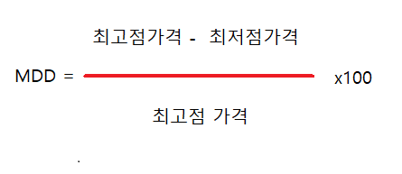

MDD
research
- About MDD? -
MDD(Maximum Draw Down) = 일정기간 동안 최고점과 최저점을 비율로 계산한 값
MDD값이 높다 = 주식 가격이 위아래로 출렁이며 파도친다 = 변동성이 심한 주식
MDD값이 낮다 = 주식 가격이 일정하다 = 변동성이 적은 주식
한국어로는 최대 낙폭이라고 부른다.
주식 가격이 출렁일수록 스트레스가 높다.
MDD값은 본인의 투자성향과 관계가 있습니다.
본 제작자는 투자에 대한 책임을 지지 않습니다.
- MMD 계산법 -
